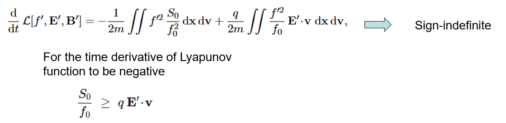
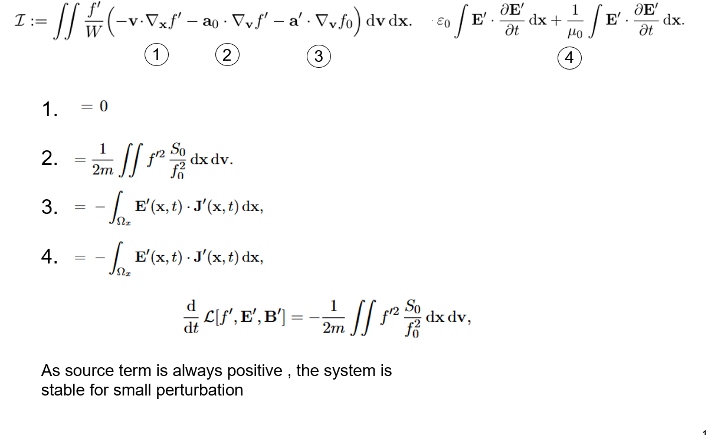
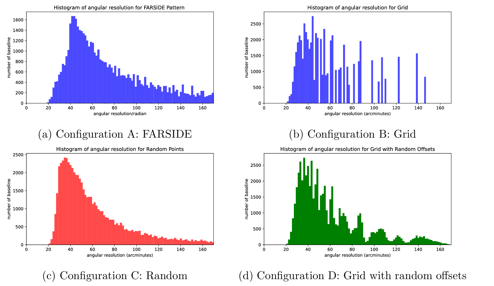
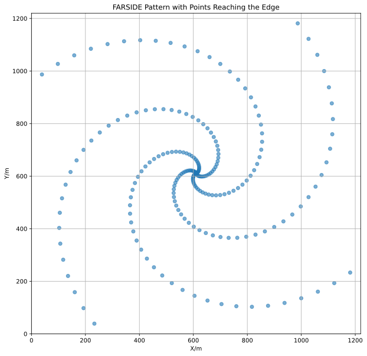
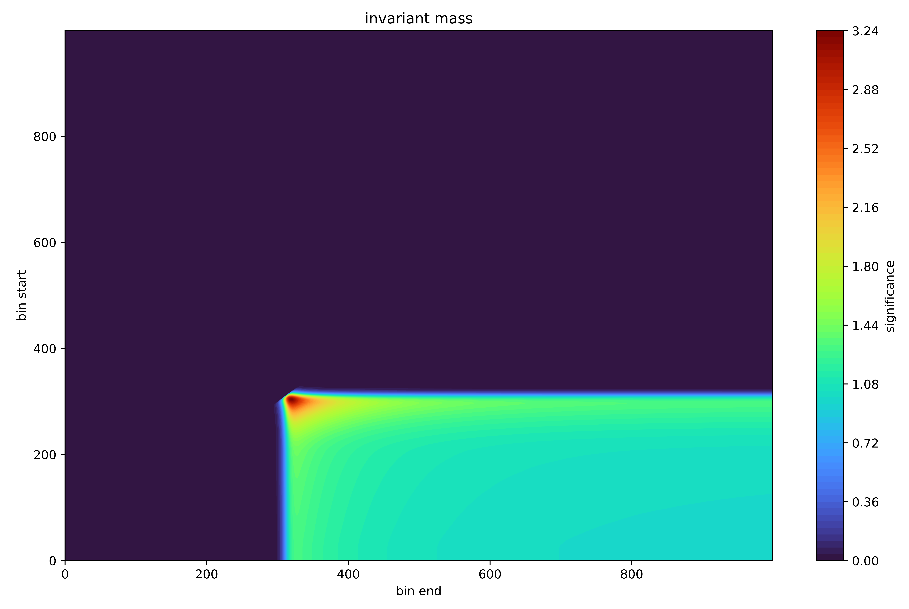
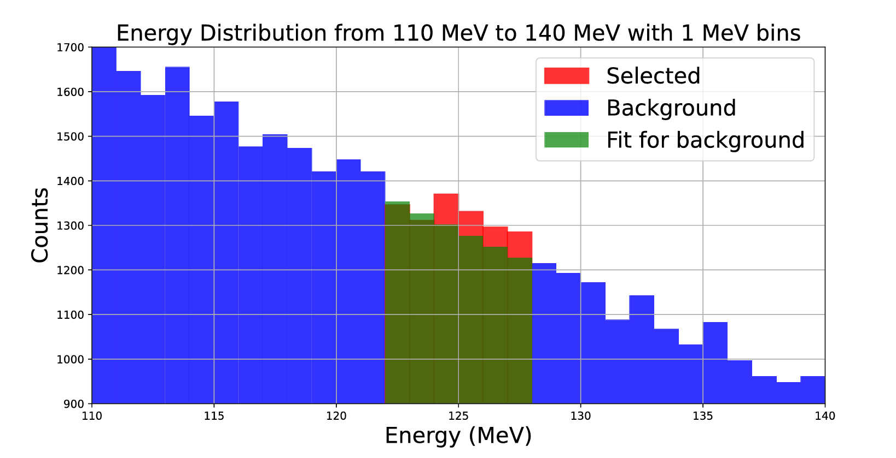

Rigorous stability analysis for Vlasov–Maxwell systems
MSc Research Project · Imperial College London · 2024–2025
In my MSc project, I applied the background flow / auxiliary functional method
to the Vlasov–Maxwell equations. The goal was to construct a Lyapunov functional
whose time derivative can be shown to be negative, yielding a rigorous
stability result for small perturbations.

The direct Lyapunov derivative contains a sign-indefinite field–particle
coupling term, preventing a direct stability conclusion.

Decomposition of the Lyapunov derivative shows exact cancellation of
field–current terms, leaving a strictly negative source contribution and
proving linear stability.
Key achievements
Constructed Lyapunov and auxiliary functionals for the Vlasov–Maxwell system
Identified and controlled sign-indefinite field–particle coupling terms
Proved linear stability for small perturbations via exact cancellations
Low-frequency radio interferometry on the lunar far side (BSc dissertation)
BSc Physics with Astrophysics · University of Manchester · 2024
Studied lunar far-side interferometry for detecting highly redshifted 21-cm signals, including site selection,
environmental constraints, and array-geometry comparisons for sensitivity and deployability. :contentReference[oaicite:0]{index=0}

This set of figures shows comparison of angular resolution histograms across
different distributions. The histograms focus on angular resolutions from 0 to 170 arc
minutes, highlighting differences in data density and distribution characteristics. The
bin number is set be 100 for all simulation allows for a direct comparison of different
interferometry structures by ensuring each histogram has the same bin width.

Example antenna layouts on the lunar far side and their impact on baseline
distribution and angular resolution.
Highlights
Evaluated lunar far-side advantages: shielding from Earth RFI + no ionosphere. :contentReference[oaicite:3]{index=3}
Discussed candidate sites and practical deployment constraints for arrays. :contentReference[oaicite:4]{index=4}
Compared grid/random/offset layouts and their baseline/sensitivity behaviour. :contentReference[oaicite:5]{index=5}
Third-year lab report · University of Manchester · 2024
Analysed diphoton events and used background estimation (hidden-box approach) to extract a cross-section
measurement; reported a result of 70.0 ± 52.4 fb. :contentReference[oaicite:6]{index=6}

Invariant mass spectrum comparing ATLAS data with Monte Carlo simulation
after event selection.

Illustration of the hidden-box method used to estimate background
contributions in the Higgs signal region.
Highlights
Implemented selection cuts guided by significance optimisation. :contentReference[oaicite:9]{index=9}
Used multiple fitting models/ranges to assess systematic uncertainty. :contentReference[oaicite:10]{index=10}
Compared experimental and theoretical values within uncertainties. :contentReference[oaicite:11]{index=11}